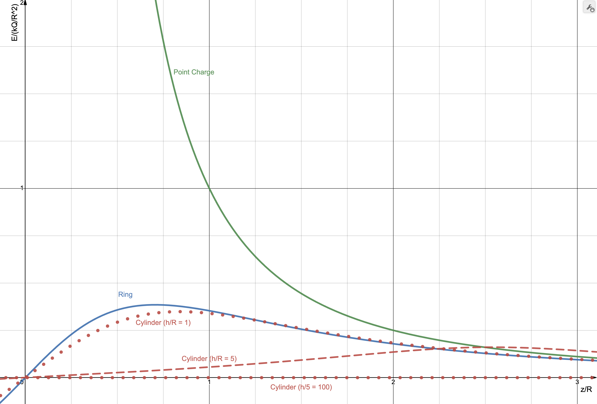

Due September 5th at 11:59 pm.
If you are stuck, please ask questions on Discord or send me questions via email.
Turn in all of your answers on paper.
In E&M, we often assume that point charges are continuously distributed. This problem addresses the accuracy of this approximation.
A line of length is centered on the origin and lies between . The charge density, , on the line is uniform.
If the line is approximated by an odd number of point charges (so a charge is always at the origin) separated by a distance and is used to compute the approximate electric field on the -axis at , how many charges are required so that
where the exact solution is given by .
You may look up the exact solution but cite your source. You may use any program or a calculator to solve this problem.
Print out the code you used for your answer and write the actual answer it yields in a comment.
Save your program as a file named HW1_1.ext, where ext is the file extension for your program, e.g., m, py, etc. You do not need to send me your code (unless you have a question about it), but in the future, I’ll have you use GitHub to store your code with that filename.
Solution
Assume a charge at x of , with small enough to be such that it is effectively a point charge. If this is the case, the vector from to is and so
To find the electric field due to a summation of these charges at from to , integrate the above expression.The exact solution is (Griffiths 4th Edition, example 2.2):
We want to re-write this is a form that will allow cancellation of constants that were not given when the above ratio is computed. Using , we have
With ,
For a charge at position
Setting , this can be written as
To compute the field due to multiple charges, we need to place charges at . The spacing is .
With term omitted, the sum is
Before implementing, check that this sum is correct by expanding it for , .
Important: I want to see checks like this in your code. In analytical problems you should always use limits to check answer. In numerical problems, you should always use some sort of check on a reduced problem to check your implementation. The following checks took me some time, but because I had them, I was able to catch errors very quickly and also have confidence in my result. In my code, I also created two plots to help me build confidence in my result; see below. I plotted the sum as a function of and verified that it converged to a constant value (initially it did not, because I forgot to divide sum by ). I also plotted the error as a function of to verify that it was monotonically decreasing. (If it started increasing at some value of , I would know that something went wrong.)
, and we want the sum terms to correspond to charges at and .
The result is . This value is used in the following program as a check.
, and we want charges at and .
The result is .
Notice the fact that the first two and last two terms evaluate to the same value. This can be used to reduce the number of computations.
To finish the problem, evaluate
or
for odd positive values of until the inequality is satisified. The result should be .
The following two figures were used to check my algorithm. Source code
Charge is uniformly distributed on the curved surface of a cylinder of length and radius . The cylinder is centered on the origin, aligned with the –axis, and has a uniform charge density of .

Find . Prior to doing any calculations, document limiting cases that you can use to check your answer.
Answer
Limiting cases:
-
Expect zero at origin.
-
Expect ring of charge solution as
-
Expect infinite cylinder solution when
We also expect (symmetry)
The field for uniformly charged ring in the – plane and centered on the origin is
If the ring is translated along the –axis by , this corresponds to a translation of the coordinate system and we can write
If we consider differential rings of height , their area is and charge is
Replacing with and with in the last equation for , we have
and this must be integrated from to . The result is
where .
(The solution was written in this form in anticipation for a problem on HW #2.)
Checks:
-
is satisfied.
-
We expect ring of charge solution as . However, when we plug this into the above, we get , which is indeterminate.
-
Expect infinitely long and uniformly charged cylinder solution when (or ). When we plug this into the above, we get . This can be shown to be correct using Gauss’s law, from which it follows that at all points inside the cylinder (not only along –axis, which we computed above).
The symmetry condition is satisifed.
Addressing the last two limits requires a significant amount of effort (see related problem). In the next homework, you will consider an alternative approach.
Next week, Gauss’s law will be covered. Find at least one freshman–level textbook and read the sections that cover Gauss’s law. Do the same for at least one upper–division undergraduate–level textbook (the references on the syllabus has a list of textbooks, but you may pick your own).
In the next class,
-
We will have a general discussion on the similarities and differences in how Gauss’s law is presented and explained.
-
I will randomly select students (or groups) to present the solution to a problem of your choosing on the whiteboard. Prepare notes for a 5–7 minute presentation (no PowerPoint, only hand–written notes). During your presentation, I will ask the class for clarifications and connections to other problems. You are welcome and encouraged to work with one or two other students on this. Stated a different way, I would like you to review Gauss’s law from multiple sources, pick a problem you think you can explain (it can be a textbook example problem, in which case explain it in your own words), and prepare a short presentation of the solution. We’ll find that all solutions (even textbook examples) have many subtleties.
Turn in your notes that you have prepared for a presentation.
Due September 12th at 11:59 pm. Due to the fact that I forgot to post this on time, if you need an extensison, feel free to ask.
Upload your solutions to GitHub. Name all files associated with your solution as HW2_x.EXT, where x = 1, 2, 3, 4 is the problem from this homework and EXT is the file extension, e.g., pdf, py, m. Upload all files associated with your solution such as code and notes (in PDF).
If you are stuck, please ask questions on Discord or send me questions via email. Be prepared to answer questions about your answers to these problems. Even if you have not completed them, I will ask for your ideas on how to approach them.
In the previous HW, you computed the electric field along the centerline of a cylinder with a uniform surface charge on its curved surface.
Showing that the equation approaches the equation for a point charge at the origin when and is not trivial. (Plugging and gives .) To show that has the correct limiting behavior mathematically is quite involved. As an alternative, we will check the limit graphically.
Create a plot of , where for (that is, plot vs ):
-
A point charge at the origin
-
A ring of radius that is centered on the origin and lies in the – plane with a uniformly distributed charge .
-
The cylinder considered on the previous homework assuming for three cases: , , and .
Be prepared to provide a physical explanation for the features of the curves and the ratios of .
Solution
The following plot was created using https://www.desmos.com/calculator/vg2dblcbfc. This page is interactive, so you can adjust the ratio.
Comments:
-
By using the dimensionless ratio, we can easily compare the fundamental features of the cylinder equation using only one parameter. If instead we plotted vs , we would need to plot the equation for many values of and to understand the full range shapes the equation can have.\htmlnewline
-
As decreases, the cylinder solution approaches the ring solution. For , the lines for the ring and cylinder cannot be distinguished by eye.\htmlnewline
-
For , the cylinder and ring curves increasingly overlap starting at approximately . This means the cylinder field is becoming more and more like the ring field as increases, which is expected.\htmlnewline
-
The ring and cylinder curves (for ) overlap with the point charge curve for large . This is expected because both being to “look” like a point charge as you move away from them.\htmlnewline
-
The explanation for the curve approaching zero as increases is in this limit, the cylinder appears to be “long”. Inside of an infinitely long cylinder , the field is zero (even off–axis). This can be shown by using Gauss’s law.\htmlnewline
-
All curves have odd symmetry (), as expected – the field for is positive and the field for is negative. (The image below only shows .)\htmlnewline \htmlnewline \htmlnewline %
Given a point charge at the origin, compute the electric flux through one face of a cube that is also centered on the origin using Coulomb’s law and explicit evaluation of the integral.
Solution
From Gauss’s law, the net flux through any closed surface is . The net flux through the cube’s surface is , and the flux must be the same through each face, so we expect the answer to be . In this problem, you are being asked to show that you get the same result without using Gauss’s law.
Several students solved for case when cube was not centered on the origin but rather had one corner at the origin and edges along the cartesian coordinate axes. In this case, one can conclude the flux through one face should be . This is equivalent to asking if we split the given cube into sub–cubes, what is the flux through the outer face of one of the sub-cubes. In this case, the face area of the sub–cube is of the area of the main cube. In addition to being the wrong problem, the solution given does not use Coulomb’s law and explicit evaluation of the integral. (The motivation for this problem is to reinforce the idea that Gauss’ law holds for arbitrary surfaces and as practice for setting up integration.)
In general,
. If we assume the side length is , then for the top side, .
We need to evaluate
Using
and , the integral is
or, nondimensionalizing the integral using and ,
Defining and using Wolfram Alpha for the integration, we have
Using Wolfram Alpha, . %
Charge placed on concentric spherical conducting shells, the cross–section of which is shown. Both shells have a thickness of . The inner shell has an outer radius of and a net charge of . The outer shell has an inner radius of and a net charge of . Assume that is positive.

Using Gauss’s law and the fact that the electric field inside a conductor must be zero show that
-
there can be no charge on the inner surface of the inner conductor,
Answer: A Gaussian sphere with a surface inside the inner conductor has on its surface (b/c inside a conductor is zero). Based on , this implies . (Note that all charges must be on the surface of a conductor, so the only possible location for the charge is on the inner and outer surfaces.)
-
the charge on the inner surface of the outer conductor is , and
Answer: A Gaussian sphere with its surface inside the outer conductor has on its surface (b/c inside a conductor is zero). Based on , this implies . The charge on the inner conductor was given as . To make the charge inside the Gaussian sphere zero, we need on the inner surface of the outer conductor to get .
-
there is no charge on the outer surface of the outer conductor.
Answer: If the total charge on the outer conductor is and all of it is on its inner surface, but conservation of charge, there is no charge on its outer surface. Recall that charges arrange themselves on a conductor to make the electric field inside all conductors zero. With this charge arrangement, the field due to the charges on the outer surface of the inner conductor cancels the field due to the charge on the inner surface of the outer conductor for .
-
Find the electric field in each of the five labeled regions and sketch a plot of versus . Region 1. is the empty volume inside of the inner conductor, region 2. is the inner conductor, region 3. is the empty volume between the conductors, region 4. is the outer conductor, and region 5. is the region outside of the outer conductor. (Hint: Use Gauss’s law several times; when not zero, the electric field should be proportional to .)
Answer: 1. 2. 3. 4. 5.
Because the electric field has the form of , it can be shown that we can always find a scalar function (which we call electric potential) such that
It can be shown that this equation can be inverted:
where the integral is taken over any path between the points given by and .
In one dimension, assuming the integration path is radial, and choosing to be the origin, we have
Using the electric field from problem 2.3.4 and assuming (I will discuss why this choice is arbitrary in class), find and sketch a plot of versus .
In class, I will ask for a physical explanation for why I will get the same result if I choose a different integration path. For example, if my integration path was radial, then tangential, then radial again. This is covered in most intro textbooks. I’ll also ask why I ask for plots of dimensionless parameters in this problem and in other problems on this HW.
Solution
In region 1, and .
In region 2, and .
The fact that the potential is constant in region 2. is consistent with the expectation that a conductor is an equipotential.
In region 3, and so
In region 4., the potential will be the same as in region 3. because a conductor is an equipotential:
In region 5., assuming the outer radius of the outer shell is , . Because in region 4. is constant and equal to , .
Due September 19th at 11:59 pm.
Upload your solutions to GitHub. Name all files associated with your solution as HW3_x.EXT, where x = 1, 2, 3 is the problem from this homework and EXT is the file extension, e.g., pdf, py, m. Upload all files associated with your solution such as code and notes (in PDF). If your PDF is larger than a few MB, compress it.
If you are stuck, please ask questions on Discord or send me questions via email. Be prepared to answer questions about your answers to these problems. Even if you have not completed them, I will ask for your ideas on how to approach them.
Suppose problem 2.3 is modified so that there is also a uniformly charged spherical shell with a radius and a total charge of .
-
Find the electric field in the five labeled regions and sketch a plot of versus .
-
Do the same for the electric potential and plot versus . Assume the potential at is zero.
-
In this problem the electric field “jumps” when crossing over charges on a surface. (That is, there is a discontinuity in the plot.) For each of the jumps in the plot of , find the ratio of the change in across the discontinuity and the charge density at the discontinuity.
Comments:
-
This was discussed in class. For a sketch, I set to simplify.
-
One can visualize the answer by inverting the sketch from 1. and asking what the cumulative sum of that plot will look like. A key feature is that the curve is continuous (but the first derivative, related to , will be discontinuous). Many students had discontinuities.
-
The jumps should be , where is the surface charge density at the location of the jumps.
I will not post solutions because there are many ways of checking your answer; you may want to try this problem again in case it shows up on an exam.
In class, I covered how to compute capacitance for (a) large conducting planes with a small separation distance and (b) the system in HW 2.3. This was done using two methods:
-
Gauss’s law (put on one conductor on another, use Gauss’s law to find , use to compute the potential difference, then use
-
Laplace’s equation (put one conductor at a potential of and the other at ; solve for , compute and use it to find ; from , compute ; then use .)
Use these two methods to find the capacitance of two equal-length and long concentric cylinders. Assume the diagram in HW 2.3 is the cross-section.
Comment: Most students used the equation for the spherical problem for both parts. For part 1., (see intro books which cover this). For part 2., the Laplacian in cylindrical coordinates, not spherical, should be used. It is
where is the radial cylindrical coordinate. If you made this error, try the problem again and verify that you get the same answer for parts 1. and 2.
-
Verify the numbers in the Step 1 column of Table 1.20 of Ramo. Show your calculations on a piece of paper. (In class, we will develop a program to compute the potentials in the other columns.)
-
Find the equation for this problem’s exact potential if all sides are set to have zero potential except the side at (you do not need to derive – citing a reference is acceptable). I recommend finding a solution first and using it to answer this part; if you have time, attempt to derive it.
(If you want to work ahead, develop a numerical solution to this problem and compare it to the exact solution.)
Answers
1.
-
This problem is given in many books as an example and here I expected you to research to find a solution. Problem 3.54 of Griffiths 4th Edition has a solution for the case when the origin is at the bottom center of the duct, the top is held at , the width is and the height is .
where . To transform this to the problem we are given, first set the width to and height . Then
. If we choose a coordinate system the is centered on the right edge of Figure 1.20a with to the left and upwards, this equation can be used.
One can show that if the origin is placed at the lower left of the duct in Figure 1.20a, with to the right and up, the potential is
where and the width and height . %\fi
Due September 26th at 11:59 pm.
Upload your solutions to GitHub. Name all files associated with your solution as HW4_x.EXT, where x = 1, 2, 3 is the problem from this homework and EXT is the file extension, e.g., pdf, py, m. Upload all files associated with your solution such as code and notes (in PDF). If your PDF is larger than a few MB, compress it.
-
Use similar steps to derive a numerical algorithm for solving numerically solving Laplace’s equation in 1–D cylindrical. (In class, I discussed solving the spherical version of this problem.)
-
If and , use your algorithm from 1. to find the potential at . (Use a grid with points at , , and .)
-
Repeat 2. using a grid with points at , , , and .
Answers
-
-
,
A spherical shell of radius and a uniform charge density is concentric with conducting spheres with the inner sphere having radius and the outer radius . Both conducting spheres are at zero potential.
-
In the previous homework, you used Gauss’s law to find the and for the same geometry and were given the charge on each surface. In this problem, use the fact that in the regions and , the fact that to find for .
You will need to use the fact that the potential is continuous, so and also a condition that relates the electric field at and .
-
Find the charge on both conductors.
Answers
where and .
In Example 4.3 of Griffiths (3rd and 4th Edition), he models a polarized sphere by using two uniformly charged spheres with centers that are separated by a small distance.
In this problem, a polarized slab will be modeled using two slabs of charge with uniform and opposite charge density that are offset by a small distance .
-
Find for the slab with uniform charge density shown in the following figure. Assume that the slab is infinite in extent in the and directions so that Gauss’s law can be used to find . (This slab can be thought of as being composed of thin sheets of charge stacked together, so an alternative to using Gauss’s law is to sum the electric field due to sheets of charge.)

-
Sketch (by hand is fine) vs . Label key points on the –axis.
-
Next, compute and sketch (by hand is fine) for the same slab if it had charge density of and was shifted by in the –direction. Assume that .
-
Compute and sketch .
The primary motivation of this problem is to justify the claim that the field of a polarized object can be computed not by finding the field due to all of the dipoles but rather by finding the field created by so–called “bound” charge densities. Here, the field due to the dipoles approaches the field due to sheets of charge. This fact is addressed in the following problem.
Answer
Details on how to solve this problem were given in class and so only a summary is given here.
1. Gauss’s law can be used to find the field for (a cylinder centered on the origin or with its bottom cap at can both be used). This gives above/below the slab. Inside the slab, we know at because the field due to the upper part of the slab cancels that due to the lower part. We also expect that inside the slab, field will increase linearly (why?). From this, we can write . This equation gives zero at the origin and matches the outer field at . Alternatively, we can also use Gauss’s law. For a cylinder centered on the origin and height , the charge enclosed is .
2. To simplify notation, use , , and with . Then
3. Invert the sketch from 2. and then translate it by in the direction. Inside the negatively charged slab, the field will be . (This gives when , corresponding to the center of the negatively charged slab.)
4. In the region of overlap we need to sum
Using and gives
For background, see Griffiths 4.1–4.4, Introduction to Electrodynamics (3rd or 4th Edition).
A result in section 4.2 is that the electric potential (and also electric field, which is related to electric potential) of a polarized object can be found by computing the bound surface and volume charge densities and , respectively. That is, instead of computing the electric field due to each dipole in a polarized object, we can get the same answer by computing the electric field due to and by using the same methods used to find the electric field due to ordinary charges and (Gauss’s law or solving the Poisson equation).
Suppose a cylinder of radius has , where is the cylindrical radial coordinate. The cylinder is long, and its centerline is the axis.
-
Find and .
-
Compute the total bound charge.
-
Find , which is the electric field due to and .
Solution
-
at ; for .
-
0, as expected because polarization is created by dipoles with a net charge of zero.
-
Due Friday, October 4th at 11:59 pm.
Determine if the “Correct Potentials” column in Table 1.20 of Ramo are correct using the analytical solution covered in HW 3.3.
Write out the equations that were evaluated to compute the potentials in a file named HW5_1.pdf and any code as HW5_1.ext, where ext is the file name extension for the language, e.g., m or py. (As before, you do not need to derive the analytical solution – you can simply cite the source of one and adapt it to this problem.)
Answer
Problem 3.54 of Griffiths 4th Edition has a solution for the case when the origin is at the bottom center of the duct, the top is held at , the width is and the height is .
where . To transform this to the problem we are given, first set the width to and height . Then
. If we choose a coordinate system the is centered on the right edge of Figure 1.20a with to the left and upwards, this equation can be used.
One can show that if the origin is placed at the lower left of the duct in Figure 1.20a, with to the right and up, the potential is
where and the width and height . Similar coordinate changes can be made to find the solution to the problem where only the right/to/bottom side is at a non–zero potential and then by superposition, .
I get, with 33 terms in sum
-
(book )
-
(book )
-
(book )
-
(book )
See HW5_1.py.
(Related problems are in section 1.15 of Ramo and example 4.5 of Griffiths 3rd and 4th edition.)
A large parallel plate capacitor is half–filled with two linear dielectrics with permittivities of and . Assume that the capacitor is large enough that the potential only varies in the –direction. In the diagram, the dotted rectangle is the cross–section of a Gaussian cylinder referenced in parts 4. and 5.

-
Solve in each dielectric using , , and .
-
Verify that when , the answer is as expected from a problem solved previously in class.
Using your answer to 1.,
-
use to find the four bound surface charge densities (that is, the bound charge density on the left and right surfaces on both dielectrics);
Save your answer in a file named HW5_2.pdf.
Answers
-
-
In this case, , which is a solution to Laplace’s equation that matches the boundary conditions (and so is the unique solution).
-
Assuming the dielectrics are linear so that . This gives the general result
For dielectric 1 on the right face, , so
On the left face , so the density has the opposite sign.
For dielectric 2 on the right face, .
On the left face , so the density has the opposite sign.
To answer the question in terms of the parameters given, use the definition .
Find a numerical approximation of the (1–D) potential for the previous problem. Do this using the “Simple Averaging Method” described in Example 1.20 of the textbook. Use grid points at , and . You only need to find the approximation using one step of the simple averaging method.
Hint: For any grid point that is not at , the potential is simply the average of the potentials to the left and right. For a grid point at , you will need to find an equation that numerically implements the exact condition . If your grid points are at , and , the only equation that you will solve is the equation for the condition . Try this version of the problem first. Does it give a sensible result when or if ?
Save your derivation and numerical values for the potential in a file named HW5_3.pdf and any code as HW5_2.ext, where ext is the file name extension for the language, e.g., m or py.
Problem 1. due at the start of class. Problems 2. and 3. due on Friday, October 11th at 11:59 pm.
This problem is due at the start of class on October 10th.
The midterm notes I mentioned in class are
-
The problems will be based on concepts covered in homework problems.
-
I will look at the homework problems, identify the concepts, and write questions that can be solved in the allotted time.
-
You are encouraged to find problems related to the homework problems in other resources and attempt them.
Find at least one problem that you think would be a good problem to know how to solve in order to be prepared for the exam.
Write the problem out on a sheet of paper and turn it in at the start of class.
During class, I’ll write the problems on the board and give you time to think about the key concepts and steps.
At and the position , a particle with charge is given an initial velocity in a region of space where there is no electric field and the magnetic field is dipolar and given by (in spherical coordinates)
In class, I discussed a numerical algorithm for finding the trajectory of a particle in a magnetic field by starting with
using the “Forward Euler” method:
Use this method to find , and at .
Then, using the results for , find , and .
(In a future homework assignment, you will find the trajectory over a long period of time using a better algorithm. For this homework, I want you to understand the basic algorithm.)
The figure shows the cross–section of two square planes that are “large”, meaning that their side length is much larger than . A surface current of flows on the bottom plane ( has units of Amps/meter); the top plane has a surface current of . (To understand a surface current, think of it as being created by placing many long straight wires side–by–side; in the diagram, the wires would be perpendicular to the page.)
Use Ampere’s law to find the magnetic field for all . Justify all of your steps. Note that most of the steps involve starting with the most general solution, , and making symmetry arguments such that integration in Ampere’s law is not needed.
Answer
If one considers the sheets to be composed straight wires, then one can argue that any field must be in the direction - at any point in space, there are two wires whose field sums to horizontal, and an infinite uniform sheet can be created by placing two such wires at a time on the sheet (to see this, use the Biot-Savart result for an infinite wire, the field is tangent to a circle centered on the wire; make sure that you can draw a diagram that justifies this paragraph).
As a result, . If the system is infinite in the and directions, there can be no dependence on these coordinates, so .
At this point, we can use Ampere’s law. Although it is possible to use Ampere’s law twice on the given system, it is easier to find the field due to one of the sheets and then use superposition.
The sign of depends on the direction of integration around the Amperian loop. Choosing clockwise integration, , where is the width of the Amperian loop. (The sign of is positive if you wrap your fingers around loop in the direction of integration and the flow of current through the loop is in the direction of your thumb.)
Therefore, we are left with
where we have assumed the unknown and are in the positive direction. It may seem we are stuck, but we can argue that , that is the field a distance above the sheet must be equal in magnitude and opposite in sign to the field the same distance below the sheet.
The final result is that the field is above the blue sheet and below the sheet.
Finally, we can use superposition to conclude that the field is between the sheets and zero otherwise.
Due on Friday, October 25th at 11:59 pm. Upload your code to your GitHub repository.
In HW 6.2, you solved for the first few steps of a charged particle in a magnetic field. In this problem, you will solve for the trajectory for a longer period of time.
Assume the particle is a proton with kinetic energy of (ignore relativistic effects) so . For the initial position, use , where is Earth’s radius. Finally, for , use .
Note that the in the equation for in HW 6.2 should have been , that is,
1. Plot the trajectory of this particle for 100 seconds.
You may use the integration method discussed in HW 6.2 (Forward Euler) or you may use a more advanced ODE integration algorithm, such as Runge-Kutta 4-5. In the following sample code, I demonstrate using Forward Euler and the ode45 function in MATLAB to solve a simple ODE.
2. Plot the trajectory of a proton with and for 100 seconds and using the same initial position used previously.
If you are interested in the theory of these trajectories, see https://arxiv.org/abs/1112.3487.
Sample Code
As an example of solving two ODES, in the following, I solve the two equations
numerically using the Forward Euler approximation. In this approximation, the equations can be rewritten as
I use the parameter , which controls the accuracy of the solution. (Note that the Forward Euler approximation is not a good method for solving ODEs, but it is simple and easy to implement. Additional references for ODEs and MATLAB: 1, 2.
MATLAB
function ode_demo()12%% Forward Euler3dt = 0.01;45t = 0;6x(1) = 1;7y(1) = 1;8Nsteps = 100;910fprintf('t\tx\ty\n')11for i = 1:Nsteps-112fprintf('%.1f\t%.1f\t%.1f\n',t(i),x(i),y(i));13x(i+1) = x(i) + dt*x(i);14y(i+1) = y(i) - dt*y(i);15t(i+1) = t(i) + dt;16end1718plot(x,y);19hold on;20xlabel('x')21ylabel('y')22title('$dx/dt=x; dy/dt=-y$; x(0)=y(0)=1','Interpreter','Latex');2324%% Runge-Kutta2526function ret = dXdt(t, X)27% For MATLAB ODE functions, must specify code that computes right-hand28% side of differential equations. Here we have29% dx/dt = x30% dy/dt = -y31%32% Defining X = [x, y], in matrix notation33% dX/dt = [x; -y]34ret = [X(1); -X(2)];35end3637[t, X] = ode45(@dXdt, [0, 1], [1, 1]);3839plot(X(:,1),X(:,2),'r-');4041legend('Forward Euler', 'Runge-Kutta 4-5');42end43
Due on Friday, November 1st at 11:59 pm.
A rectangular duct carries a net current of in the direction shown. A series of current supplies along the infinitesimal gap is driving the current. The conducting material of the duct has a small enough thickness that the current can be treated as flowing on a sheet. Ignore the subscript on the variables in the following diagram.

-
Assuming and , use Ampere’s law to find the magnetic field inside and outside of the duct. Show the Amperian loop and justify your steps.
Answer: Inside the duct out of the page. To derive this see HW 6.3 for the derivation for a single plane. Inside the duct, the fields due to each plane add. Outside they cancel.
-
The electromotive force across the gap is due to a change in magnetic flux
where is the magnetic flux. Compute this magnetic flux and re-write this equation in the form of
so as to find the inductance in terms of , , and the cross-sectional area .
Answer: For the area bounded by the loop as shown, so from which we conclude . Note the sign convention for - the direction of is determined by the right-hand rule applied to the path shown. From the diagram, is out of the page because wrapping your fingers in the direction of the loop gives your thumb pointing out of the page. So is in the direction of and is positive if is increasing in time. From , we see that is negative in this case, so this induced emf is clockwise. This is consistent with Lenz’s law - if is increasing in the counter-clockwise direction, the induced emf will be as to oppose that change, which an emf clockwise direction does.
-
An alternative method of computing inductance uses the relationship , where is a differential volume, the integral is taken over all space, and is the magnitude of the field created by the current (see Ramo section 2.17 with and Griffiths 4th edition, section 7.2.4). Use this formula to compute .
Answer: Assuming th magnetic field is constant over the volume and ignoring the field outside of the volume, , so
In class, I derived the inductance of a long co–axial cable using and the definition
In the previous problem, it was noted that an alternative approach is to use .
Use to find for the long co–axial cable geometry considered in class, where the cable had length , inner radius , and outer radius .
Answer:
Show that using only Euler’s identity, .
(For the curious, there is a geometrical proof).
Answer:
Using and expanding the product gives
It also follows that
Later in the semester, we will encounter an equation that corresponds to the sum of waves travelling in opposite directions, each with different amplitudes:
where is a constant. Show that this equation can be written as the sum of two standing waves:
and find and .
Answer: Using, from the last problem,
also,
With and and adding these two equations,
so , . The importance of this identity is that a forward traveling wave of amplitude and an backward (for example reflected) travelling wave with amplitude can be expresses as the sum of two standing waves.
Write in the form using
-
only the identity and
-
the method outlined on page 784 for the example addition of two sine functions of this document.
Answer:
-
Using the identity, we can write
where and .
Using an identity derived earlier, where , we get
-
Using Euler’s identity,
Because can be written as , where , we can write
or
Read about the displacement current in Ramo, Griffiths, and one other reference. Come to class with at least one question about it
Use the approach covered in class (see also Example A.1) to find the steady state solution for the ordinary differential equation
Also, find the steady-state solution to
where .
Answer
Using and gives
where , which is satisfied when the quantity in is zero. This gives
which can be written in the form using where and so that
With , we have
Checks:
-
For , and fixed , so current is in phase with voltage, which is expected for circuit with inductor replaced with resistanceless wire. Same for circuit ().
-
For and fixed , , current lags voltage by . (In this case, the solution is , or without phasors, .
In class, I showed how the differential equation for a circuit with a AC voltage in series with a resistor and inductor and the use of and led to an equation for that was the same as if we had a circuit with
-
a AC source of
-
a resistor with a voltage drop of ,
-
and an inductor with impedance of , and we treated the voltage drop across the inductor as .
As a result, we can treat an inductor much like a resistor in DC circuit analysis when finding the voltage across it: we multiply the (complex-valued) current times the impedance, .
In class, I started the problem of finding the impedance of a capacitor by considering the differential equation for a circuit with an AC voltage in series with a resistor and capacitor.
Show your notes for the procedure I started in class for this case and then finish it by showing , where .
-
Find the complex currents () in the following circuit using KVL and KCL for AC circuits. That is, use the same procedure as KVL and KCL for DC circuits with voltage drops across inductors and capacitors as and , respectively.
Use [Volts], [Henry], and [Farad].
-
Find ()
-
Find the impedance “seen” by the source, which is . (As a check, for and , you should get )
-
Find the time domain expressions for all currents and voltages. That is, find and ().
-
Sketch or plot and if (in this case the “load” is a resistor with resistance of ).
Answer
One method is to collapse the circuit in steps as shown below to find . Once is known, the unknown complex voltage and current amplitudes can be found.
Note that this can be generalized - replace with :
This is the equation that would apply if the circuit had a third step and was the result of collapsing the third step. More generally,
where is the step number. Using the given parameters,
An iterative approach to computing and , and is to note that KCL for each node is
and the relationship for the voltages across the inductor is
and, as before,
We are given that and we also know that .
with gives
Using
with gives
Repeating the last two steps with gives
Using the above with the given parameters,
-
, , and
-
, , and
-
, where
Using given parameters (see above),
Check that answers to 1. and 2. are consistent:
-
-
Plot should have and
Given an AC power source that has an internal impedance of that is in series with a load with impedance ,
-
Find the instantanous power of the load:
-
Find , the average of found in part 1. over a time of
-
Use the equation found in part 2. to show that is a maximum when and (assume and are constants; in this case, is a function of the variables and ).
Answer
1.
Let . Note that because defines .
Using and
.
, where was used.
By definition, . Noting that ,
(Note that .)
Substitution gives
, where
Using a trig identity,
2.
Using and integrating,
Note that the above can be re-written as , which has the form similar to the DC circuit equation (the factor of 2 arises from averaging the square of a sinusoid, which is 1/2 of its maximum value).
Alternatively, defining
Recall that is the angle associated with . Although we ususally use , we can also write . Thus
If we assume that the and are constant and and can be varied, we have
.
To find and that maximize, solve the following two equations for and :
Setting this equal to zero gives . Plugging this into gives
Setting this equal to zero gives . So
(One should also should verify that this is a maximum by computing second derivatives.)
Note that this is the same answer one obtains for the problem covered in class where .
In class, I discussed an iterative method for solving for the steady state currents and voltages in the ladder circuit of HW 9.3.
Write a program that takes as an input the the number of steps in the ladder, , , , and and produces a plot of the magnitude and phase of the voltage across each capacitor as a function of the capacitor number (use the numbering convention used in the diagram of HW 9.3). Assume the input voltage is [Volts].
-
Create a plot of the magnitude and phase of the voltage across each capacitor as a function of the capacitor number using and the same parameters used in HW 9.3.
-
Repeat part 1. using
-
Repeat part 1. using .
Answer
See HW10_2.
Watch the following three videos before class
-
-
Response to response: https://www.youtube.com/watch?v=oI_X2cMHNe0
If you want to work ahead, think about how you would reproduce the results shown at 14:25 of the second video.
Read 5.1-5.8 of Ramo.
In class, we considered a coaxial cable of length with one end connected to a AC power supply with . The other end was connected to an infinitely long coaxial cable. The characteristic impedances were and , respectively. Schematically, the system is represented as in the following figure, where the top line corresponds to the outer cylinder and the bottom line corresponds to the inner cylinder.
We solved for the complex–valued constants and .
Recall that the general solution for voltage in the two cables is
where corresponds to the cable of length and the infinitely long cable; and are complex–valued constants.
This can be re-written as
by defining and
-
Find , and in terms of .
-
Plot or sketch the voltages and as a function of . Assume that and (from which you should find , and .)
-
Write the quantity in polar form, . That is, find and . Assume that and .
Answer
1.
2. See https://www.desmos.com/calculator/wteuno5c2u (assumes )
Using and ,
3.
Using the given values,
We want to write
in the form
or
so that we can determine at a given what the maximum of will be over one period.
Using gives
Previously, we have considered a method for finding the steady state solution to a circuit that is driven by a harmonic source.
To find a transient solution, an alternative approach is needed. These approaches include using numerical integration (for an approximate solution) and the Laplace transform method (for an exact solution). Both typically involve writing the circuit equations in “state space form”, e.g.,
1. For the circuit below, assume is a resistor so . If , , , and and and the state space variables are , , and , show that
Answer
, where is the charge on the capactor at node . Differentiating and using gives . KVL at node 1 is , so
Using , the three differential equations are
2. Use the techniques covered previously for finding the steady state values to find the steady state , , and . (You do not need to find the transient solution; here we only want to confirm that our numerical solution matches the easier-to-compute steady state solution for large . Note that there are many ways of solving 1; 2
set(0,'defaultTextInterpreter','LaTeX')1set(0,'defaultLegendInterpreter','LaTeX');2T = 2*pi;4% Solution for one ladder step6figure(1);clf;hold on;grid on;7[t, X] = ode45(@dXdt1, [0, 5*pi], 0);8plot(t,cos(t),'k-','LineWidth',2);9plot(t,X(:,1),'r-','LineWidth',2);10title_ = '$dx/dt = -x + \cos(t)$';11title(title_,'FontWeight','bold');12legend('$\cos(t)$','$x$');13xlabel('$t$');14% Solution for two ladder steps16figure(2);clf;hold on;grid on;17[t, X] = ode45(@dXdt2, [0, 20*T], [0, 0, 0]);18plot(t/T,cos(2*pi*t/T),'k-','LineWidth',3);19plot(t/T,X(:,1),'g-','LineWidth',2);20plot(t/T,X(:,2),'b-','LineWidth',2);21plot(t/T,X(:,3),'r-','LineWidth',2);22legend('$\cos(t)$','$I_1$', '$I_2$', '$V_1$');23xlabel('$t/T$');24ylabel('$x$');25function dXdt = dXdt1(t, X)27 T = 2*pi; % Note variable defined also above.28 % Better approach (not used here to keep code simple):29 % https://www.mathworks.com/matlabcentral/answers/168073-ode45-where-odefun-requires-more-parameters30 dXdt = -X + cos(2*pi*t/T);31end 32function dXdt = dXdt2(t, X)34 T = 2*pi;35 U = [cos(-2*pi*t/T) ; 0 ; 0]; % Time-dependent drivers36 A = [ 0 0 -1;...37 0 -1 1;...38 1 -1 0];39 B = [1 ; 0 ; 0];40 dXdt = A*X + B.*U;41end42Answer:
See HW11.m.
From HW 9.3,
, , and
, , and
So
Note that another method of solution is to solve for in
by replacing with and using matrix inversion to solve for .
Due on Friday, December 6th at 11:59 pm
In HW 10.2, you found the exact steady–state solution to a –step ladder circuit.
In HW 11.1, you computed the steady–state solution for a continuous transmission line.
I have noted that a ladder circuit can be used to approximate a continuous transmission line and that finding the transient solution analytically for a ladder circuit is possible, but more involved.
Approximate the transmision line of HW 11.1 with a ladder LC network with at least 100 elements; assume and . Note that in a circuit representation, the second transmission line can be replaced with a circuit element with resistance . Assume that , , and .
-
Compute and plot , where is the step number of the ladder. In class, I discussed several ways of doing this, including writing recursive relationships for the voltages and currents.
-
Compare your result from 1. with your answer from HW 11.1 by plotting their voltage magnitudes on the same plot vs. (from to ). You will need to determine a relationship between the step number of the ladder and the coordinate in HW 11.1 in order to make the comparison.
Notes:
-
In the derivation for the continuous transmission line, and are inductances and capacitances per unit length.
-
The lumped capacitances and inductances for the circuit problem can be computed using the given parameters and and arbitrary non–zero value of .
Solution
See HW12_1.
Starting with HW 11.2, create a function dXdt3 that is a generalization of dXdt2 that allows the solution to work for an –step ladder.
Plot and . Also plot and on the same axes, where the superscript indicates the solution found using the phasor method to find the steady state solution.
PHYS 513 Midterm Exam. Closed book and notes. 4:30 – 6:00 pm Thursday, October 17th.
The space between two concentric conducting spherical shells of radius and is filled with a thick dielectric shell with permittivity for and a thick dielectric shell with permittivity for . The space for and has permittivity .
The inner conducting shell at is held at potential . The outer conducting shell at is held at a potential of .
-
Find the electric potential, , for all
-
Find for all
-
Find for all
-
Find all surface charge densities (both bound and free)
-
Find the capacitance
Note that
A section of a long coaxial cable is shown in the following image. Find the magnetic field for all . Assume that the current is uniformly distributed through the cross–sectional areas (i.e., the current density, , is constant for and ).
Answer
From Ampere’s law and the symmetry arguments discussed in class,
where is the radial coordinate and the increases in the counterclockwise direction.
1. Ampere’s law (25 pts)
Use Ampere’s law to find the magnetic field of a long cylinder of radius that carries a uniform surface current density . Starting with the most general solution
,
-
Provide the justifications needed to claim that the solution must have a simpler form that allows one or more component of to be found using Ampere’s law (16 pts)
-
Find for all (4 pts)
-
Show mathematically why a square Amperian loop could not be used to find the magnetic field using Ampere’s law (5 pts)
2. Continuous Transmission Line (25 pts)
The above transmission line has a characteristic impecance of and a characteristic wavenumber of . Assume .
Derive and compute it for the following cases
-
-
-
is a inductor.
For , show that
-
at , where
-
If and are measured at a given over a long period of time, the ratio of the maximum measured value of to the maximum measured is .